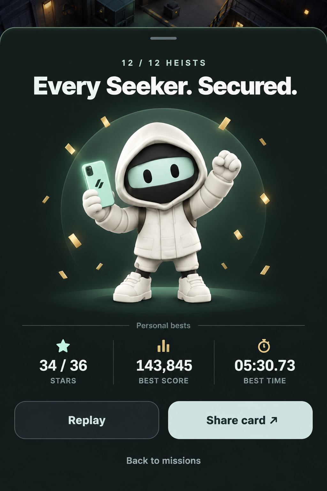
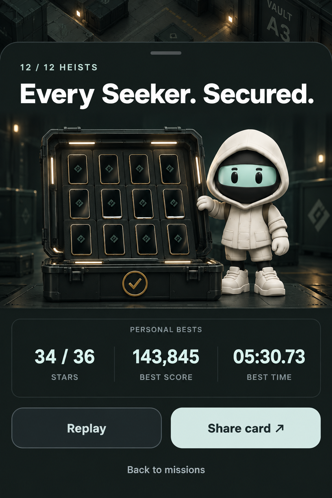
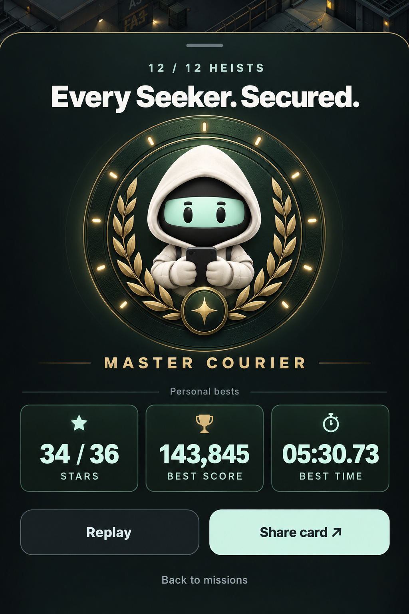

Option A is now implemented with live stats, the corrected Seeker phone and animated paper confetti. The images below are the original concept choices.
A · Courier celebration
One large character, a clear victory pose and the simplest layout.

B · The full collection
All twelve phones in the case make completion tangible.

C · Master Courier
A medal and laurel treatment for a more formal achievement.
